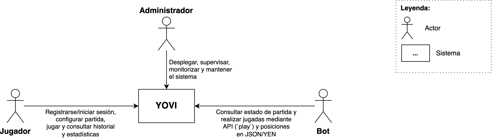
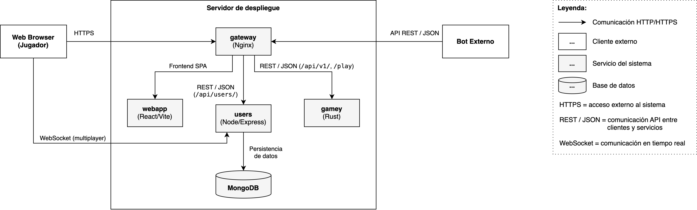
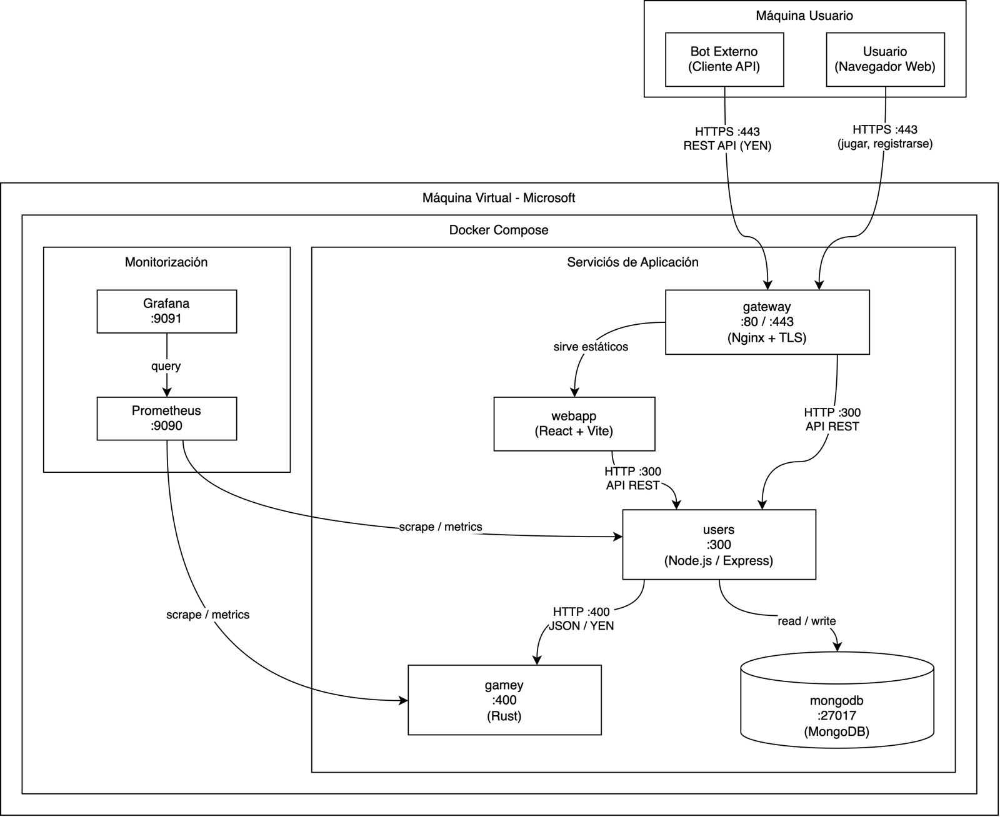
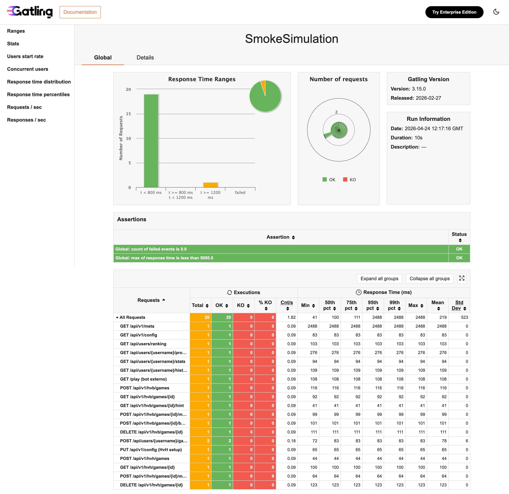
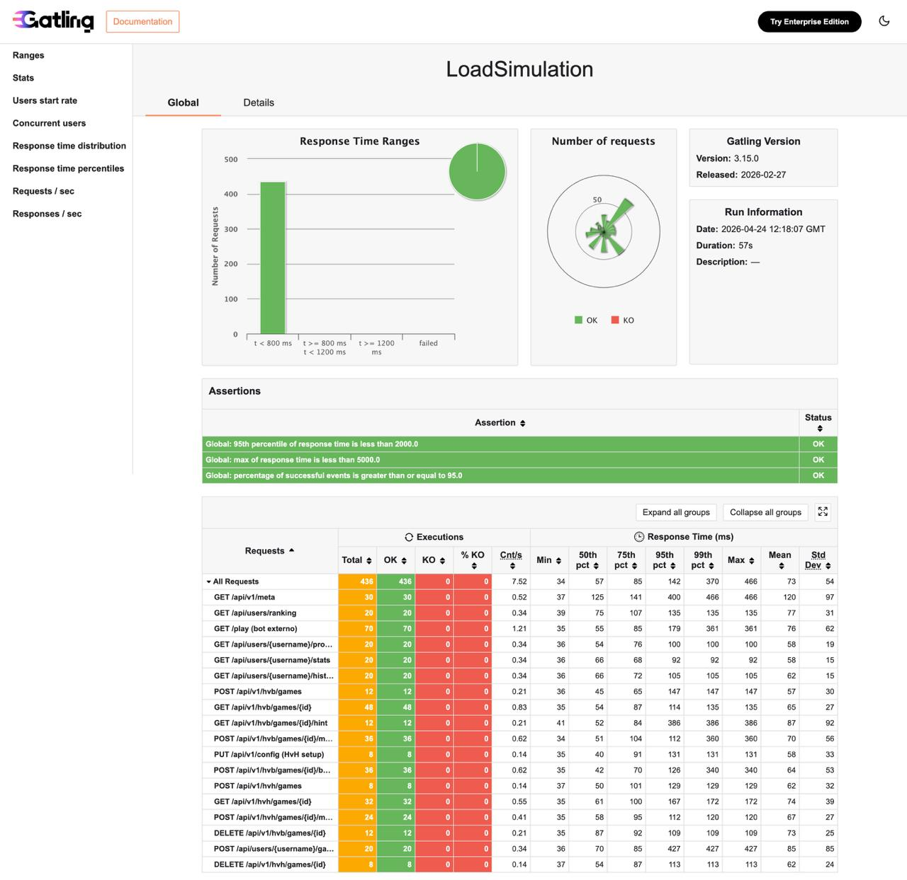
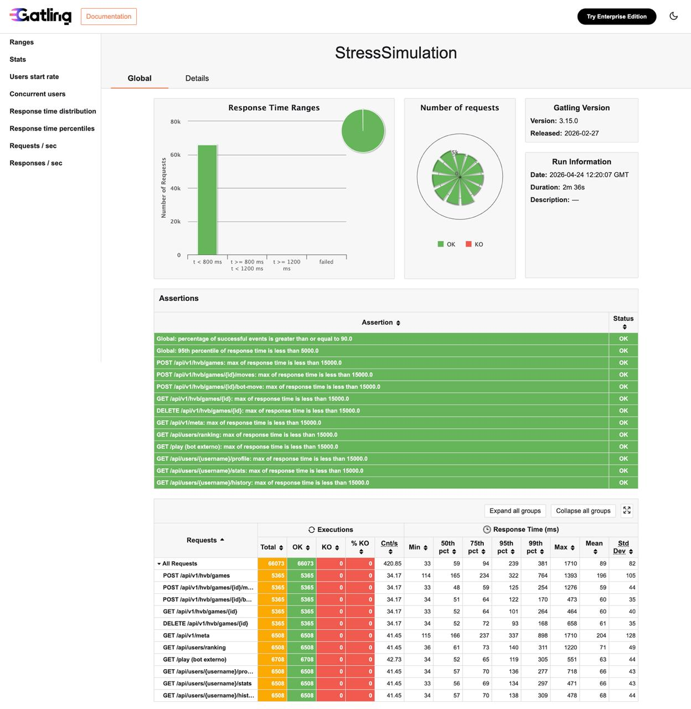
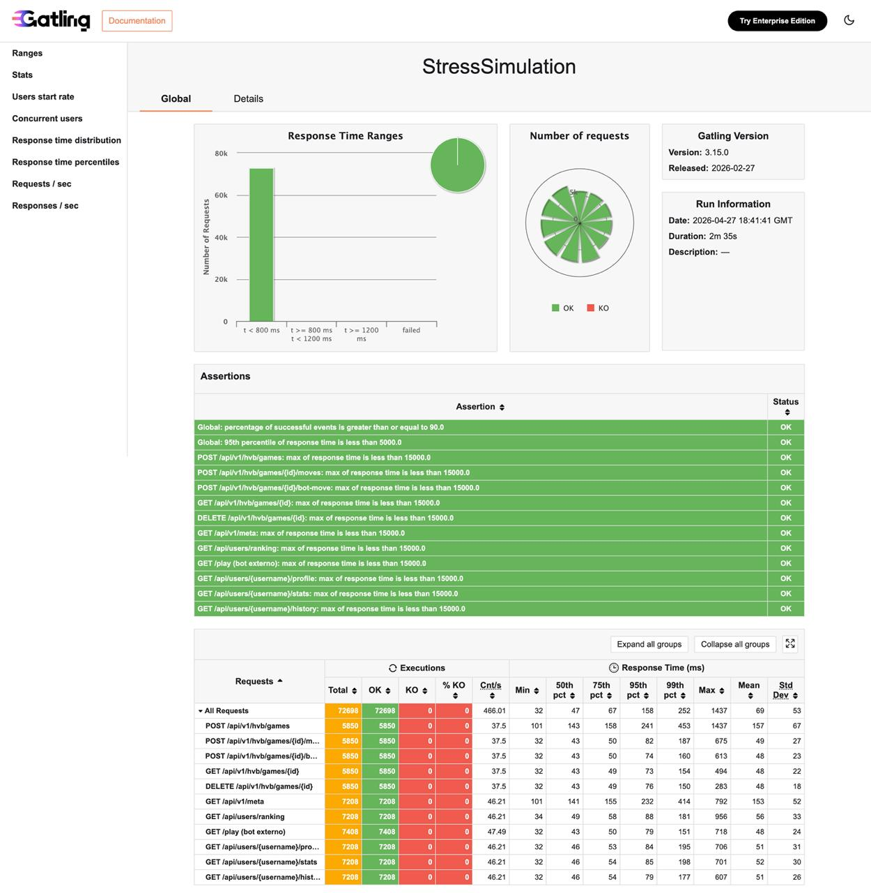

About arc42
arc42, the template for documentation of software and system architecture.
Template Version 8.2 EN. (based upon AsciiDoc version), January 2023
Created, maintained and © by Dr. Peter Hruschka, Dr. Gernot Starke and contributors. See https://arc42.org.
1. Introducción y Objetivos
1.1. Descripción de los requisitos
El sistema desarrollado permite jugar al juego Y a través de una interfaz web, apoyándose en una arquitectura modular compuesta por varios servicios.
Actualmente, la aplicación ofrece las siguientes funcionalidades principales:
-
La app dispone de una interfaz web para jugar al juego Y.
-
Se ofrecen varios modos de juego:
-
Partida jugador contra jugador local (HvH).
-
Partida jugador contra bot (HvB).
-
En el modo contra bot, el usuario puede seleccionar el nivel de dificultad, asociado a varias estrategias.
-
-
Partida multijugador online en tiempo real.
-
Los usuarios pueden crear o unirse a salas de juego.
-
Se incluye un sistema de chat entre jugadores dentro de la sala.
-
-
-
La aplicación incorpora un flujo de selección de variante antes de configurar la partida.
-
La variante clásica constituye la base principal del sistema.
-
Se han implementado múltiples variantes adicionales que modifican las reglas del juego:
-
Regla del Pastel
-
Master Y
-
Fortune Coin
-
Fortune Dice
-
Tabu Y
-
Holey Y
-
Why Not
-
-
Las variantes alteran las reglas de movimiento, turnos y condiciones de victoria.
-
-
El tablero tiene tamaño variable, configurable por el usuario dentro de unos límites establecidos.
-
El usuario puede elegir quién empieza la partida:
-
En HvB: el usuario, el bot o aleatorio.
-
En HvH: el jugador 1, el jugador 2 o aleatorio.
-
En ciertas variantes, el flujo de turnos puede modificarse dinámicamente (por ejemplo, en la regla del pastel o variantes Fortune).
-
-
El usuario podrá registrarse en la aplicación, o inciar sesión si ya tiene cuenta asociada.
-
Cada usuario registrado podrá consultar su historial de partidas, estadísticas (ganadas, perdidas, abandonadas, racha, etc.) y un ranking global con estadísticas de otros usuarios.
-
En caso de jugar como usuario invitado, no se guardará el historial ni las estadísticas.
-
Al finalizar la partida, el usuario invitado puede registrarse o iniciar sesión para guardar el resultado sin perder el contexto.
-
-
-
El sistema almacena información detallada de cada partida:
-
Modo de juego y variante utilizada.
-
Resultado (victoria, derrota, abandono o empate).
-
Número de movimientos realizados por el usuario.
-
Rival.
-
Fecha de finalización.
-
-
Se proporciona un API externo documentado para la interacción con bots y sistemas externos.
-
El servicio de juego permite crear partidas, realizar movimientos, consultar estados y obtener jugadas de bots.
-
El API incluye un método
playque recibe una posición en notación YEN y devuelve el siguiente movimiento o acción. -
El servicio de usuarios expone endpoints para autenticación, historial, estadísticas y ranking.
-
-
El motor del juego está desacoplado de la interfaz web y se implementa como un servicio independiente en Rust.
-
Gestiona la lógica del juego, validación de movimientos y cálculo de bots.
-
La comunicación entre la web y el motor se realiza mediante HTTP y mensajes JSON basados en la notación YEN.
-
-
El sistema incorpora monitorización y observabilidad mediante Prometheus y Grafana para analizar el comportamiento de los servicios.
Casos de uso:
| ID | Caso de uso | Actor | ¿Qué pasa? |
|---|---|---|---|
UC-01 |
Registrarse |
Usuario |
El usuario crea una cuenta en la aplicación, verifica su correo y accede a funcionalidades asociadas a su perfil. |
UC-02 |
Iniciar sesión |
Usuario registrado |
El usuario accede con sus credenciales para consultar su historial, estadísticas y ranking, además de guardar partidas en su cuenta. |
UC-03 |
Verificar cuenta |
Usuario registrado |
El usuario confirma su cuenta mediante el enlace de verificación enviado por correo electrónico. |
UC-04 |
Seleccionar variante del juego |
Usuario |
El usuario elige la variante con la que desea jugar antes de configurar la partida. |
UC-05 |
Configurar una partida |
Usuario |
El usuario selecciona el modo de juego, el tamaño del tablero, quién comienza la partida y el nivel de dificultad (si corresponde). |
UC-06 |
Crear partida jugador vs jugador local |
Usuario |
El sistema crea una nueva sesión de juego HvH local y devuelve el estado inicial de la partida. |
UC-07 |
Crear partida jugador vs bot |
Usuario |
El sistema crea una nueva sesión de juego HvB, aplicando la configuración elegida y, si corresponde, realizando el primer movimiento del bot. |
UC-08 |
Crear sala multijugador online |
Usuario |
El usuario crea una sala asociada a un código y espera a que otro jugador se una para comenzar la partida. |
UC-09 |
Unirse a sala multijugador |
Usuario |
El usuario se une a una sala existente mediante el código asociado para jugar contra otro jugador. |
UC-10 |
Jugar un turno desde la web |
Usuario |
El usuario selecciona una celda válida y el sistema actualiza el estado de la partida conforme a las reglas de la variante activa. |
UC-11 |
Sincronizar partida multijugador |
Sistema |
El sistema transmite los movimientos entre jugadores en tiempo real mediante WebSockets. |
UC-12 |
Obtener la respuesta del bot |
Sistema |
Tras la jugada del usuario en una partida HvB, el servicio de juego calcula y aplica automáticamente el movimiento del bot. |
UC-13 |
Comprobar si la partida ha finalizado |
Sistema |
Después de cada movimiento, el sistema determina si existe un ganador o si la partida continúa. |
UC-14 |
Abandonar una partida |
Usuario |
El usuario sale de una partida en curso y el sistema la marca como abandonada (si corresponde). |
UC-15 |
Guardar una partida en el historial |
Usuario registrado |
Al finalizar una partida, el sistema registra el resultado en la cuenta del usuario, actualizando su historial y estadísticas. |
UC-16 |
Ver historial y estadísticas |
Usuario registrado |
El usuario consulta el historial de partidas anteriores y sus estadísticas guardadas en su cuenta. |
UC-17 |
Consultar ranking global |
Usuario |
El usuario consulta la clasificación global de jugadores en función de sus resultados. |
UC-18 |
Enviar mensajes en sala multijugador |
Usuario |
El usuario envía y recibe mensajes en tiempo real durante la partida online. |
1.2. Objetivos de calidad
Los objetivos de calidad del sistema se concretan y evaluarán en la sección "10. Atributos de Calidad" siguiendo el modelo ISO/IEC 25010, mediante un árbol de calidad y escenarios. De forma resumida, la arquitectura prioriza:
-
Adecuación funcional: El motor debe garantizar el cumplimiento de reglas y la validación del estado de la partida, evitando acciones inválidas y guiando al usuario durante el juego.
-
Eficiencia de desempeño: Se busca respuesta ágil y sin “lag” en las operaciones principales, con un uso eficiente de recursos y soporte de concurrencia, apoyado en el motor en Rust y el despliegue en contenedores.
-
Compatibilidad / interoperabilidad: La comunicación entre subsistemas y con bots externos debe ser estable, clara y validada, basada en JSON con notación YEN y un API bien documentado.
-
Usabilidad: La web debe ser intuitiva y fácil de aprender, con una interfaz que indique turnos, opciones y restricciones, reduciendo errores del usuario.
-
Fiabilidad / disponibilidad: El sistema debe mantener estabilidad ante fallos habituales y ser observable/monitorizable para detectar caídas o degradaciones.
-
Seguridad: Se controlarán accesos (registro/login y API pública), validación de entradas y medidas de protección de credenciales (por ejemplo, cifrado/hasheado de contraseñas).
-
Mantenibilidad: El diseño modular por microservicios y la separación de responsabilidades deben permitir incorporar nuevas estrategias/reglas o cambios en el API minimizando el impacto en el resto del sistema.
-
Portabilidad: Al basarse en Docker, el sistema debe ser desplegable en distintos entornos con una instalación reproducible.
1.3. Stakeholders
| Stakeholder | Descripción | Expectativas / motivaciones |
|---|---|---|
Jugador (usuario final) |
Persona que utiliza la aplicación para jugar al juego Y (contra otro jugador local, contra un bot o en modo multijugador online). |
Que la aplicación sea fácil de usar, intuitiva, que cargue rápido y sin errores, poder jugar en diferentes modos y variantes, comunicarse en partidas online y consultar su historial y estadísticas. |
Equipo de desarrollo |
Mario Amandi, Marcelo Díez, Andrea Ivanov y Eloy Rubio |
Poder trabajar sobre una arquitectura modular, implementar y mantener un buen sistema de pruebas (unitarias y E2E) y desplegar el sistema de forma continua, además de mejorar las habilidades de programación (nuevos lenguajes), desarrollo y trabajo en equipo. |
Profesorado |
Jose E. Labra Gayo, Pablo González, Diego Martín Fernández y Celia Melendi Lavandera |
Que el sistema cumpla los requisitos, tenga una arquitectura bien justificada, disponga de pruebas automatizadas y sea accesible públicamente. |
Micrati |
Empresa que decide apostar por el desarrollo del juego y encarga el proyecto. |
Que el producto final sea usable, estable, extensible y mantenible, permitiendo futuras mejoras y nuevas funcionalidades sin comprometer el sistema. |
2. Restricciones Arquitectónicas
2.1. Restricciones técnicas y estructurales
| Restricción | Descripción |
|---|---|
Frontend desarrollado con Vite y React |
La interfaz gráfica del sistema debe implementarse como una aplicación web usando React y Vite. |
Servicio de usuarios desarrollado con Node.js y Express |
El sistema debe incluir un servicio dedicado a la gestión de usuarios, implementado mediante una API REST con Node.js y Express, utilizando persistencia en MongoDB. |
Juego desarrollado con Rust |
La lógica del juego (validación de movimientos, comprobación de victoria, cálculo de bots, etc.) debe implementarse en Rust y exponerse mediante un servicio HTTP independiente. |
Separación en subsistemas (web + motor de juego) |
La arquitectura debe dividirse al menos en dos subsistemas: una aplicación web y un motor de juego en Rust, comunicándose entre sí mediante servicios web. |
Comunicación entre servicios mediante HTTP y JSON |
La integración entre los distintos módulos del sistema debe realizarse mediante peticiones HTTP e intercambio de datos en formato JSON. |
Uso de notación YEN para representar el estado de la partida |
El estado del tablero debe representarse mediante la notación YEN para permitir interoperabilidad entre servicios y bots externos. |
API externa para bots |
El sistema debe exponer un API documentado que permita a bots interactuar con él, incluyendo el método |
Soporte de tablero de tamaño variable |
El sistema debe soportar un tablero cuyo tamaño sea configurable (un tamaño establecido predefinido, y que el usuario pueda escoger otro tamaño diferente, dentro de los límites definidos). |
Diferentes estrategias de bot (dificultad) |
El sistema debe incluir varias estrategias de juego para el bot, permitiendo al usuario seleccionar el nivel de dificultad. |
Soporte de múltiples variantes del juego |
El sistema puede permitir la implimentación de variantes del juego Y (como Tabu, Holey, Pastel, Fortune, etc.). |
Soporte de multijugador en tiempo real |
El sistema debe permitir que varios usuarios jueguen simultáneamente, utilizando comunicación en tiempo real (WebSockets) para sincronizar partidas y permitir interacción entre jugadores. |
Arquitectura basada en microservicios |
El sistema debe organizarse en varios servicios independientes (webapp, users, gamey, gateway), cada uno con responsabilidades diferenciadas. |
Uso de contenedores Docker |
El sistema debe desplegarse mediante contenedores Docker, facilitando su ejecución en una máquina virtual y garantizando portabilidad. |
Monitorización y observabilidad |
El sistema debe incorporar herramientas de monitorización (Prometheus y Grafana) para analizar el estado y rendimiento de los servicios, en línea con los criterios de evaluación. |
Pruebas automatizadas |
El sistema debe incluir pruebas unitarias, de integración y end-to-end, así como pruebas de carga, siguiendo los criterios de calidad definidos en la práctica. |
Documentación con arc42 |
La documentación debe seguir la estructura base de la plantilla arc42. |
Control de versiones |
El proyecto se desarrollará mediante Git, alojándolo en GitHub. |
2.2. Restricciones organizativas y de proceso
| Restricción | Descripción |
|---|---|
Énfasis en calidad y evaluación |
El proyecto será evaluado en base a la calidad de la documentación, implementación, pruebas, despliegue y arquitectura general del sistema. |
Uso de buenas prácticas de desarrollo |
Se requiere mantener un repositorio organizado, con revisiones de código, trazabilidad de cambios y cumplimiento de estándares de calidad. |
Trabajo en equipo y control de cambios |
El desarrollo se realiza en equipo, por lo que es necesario el uso de control de versiones, revisiones de código y coordinación entre miembros. |
Gestión de tareas |
Se utilizará GitHub Issues para la planificación, asignación y seguimiento de tareas del proyecto. |
Integración y despliegue continuos (CI/CD) |
El proyecto debe automatizar la ejecución de tests y el despliegue mediante pipelines de integración y entrega continua. |
Pruebas y validación |
Se deben incluir pruebas unitarias, pruebas de integración, pruebas end-to-end y pruebas de carga, siguiendo los criterios de evaluación. |
Tiempo y alcance limitados |
El proyecto se desarrolla en varias iteraciones (entregas parciales), por lo que es necesario priorizar funcionalidades y gestionar el alcance. |
Reuniones de equipo |
Se realizará al menos una reunión semanal (sesión de laboratorio), complementada con reuniones adicionales cuando sea necesario. Las decisiones se documentarán en el repositorio. |
Evaluación basada en múltiples criterios |
El sistema será evaluado teniendo en cuenta documentación, desarrollo, pruebas, gestión del proyecto, despliegue, funcionalidad y atributos de calidad. |
3. Contexto y Alcance
3.1. Contexto de negocio

-
Jugador: Interactúa con el sistema a través de la interfaz web. Puede registrarse o iniciar sesión, configurar partidas, jugar en diferentes modos (local, contra bot o multijugador online), comunicarse con otros jugadores en tiempo real y consultar su historial/estadísticas.
-
Bot: Sistema externo que interactúa con YOVI mediante una API pública. Puede utilizar el método
playenviando posiciones en notación YEN para obtener la siguiente jugada o acción, permitiendo automatizar partidas o realizar jugadas para competir contra el sistema. -
Administrador: Responsable de desplegar, supervisar y mantener el sistema, asegurando su disponibilidad, correcto funcionamiento y monitorización.
-
YOVI: Sistema principal que ofrece la funcionalidad del juego Y. Ofrece una interfaz web para los usuarios y una API externa para integraciones con bots, gestionando la lógica de juego, las partidas, los usuarios y las estadísticas.
3.2. Contexto técnico

-
Web Browser (Jugador): Cliente desde el que el usuario accede a la aplicación web. Interactúa con el sistema mediante HTTPS cargando la SPA y realizando peticiones a la API.
-
Bot Externo: Cliente software que consume la API del sistema para interactuar con las partidas, utilizando endpoints REST (como
/play) y enviando posiciones en formato JSON/YEN. -
Servidor de despliegue (Docker): Entorno donde se ejecutan los distintos servicios del sistema, desplegados como contenedores independientes. Incluye:
-
gateway (Nginx): Punto de entrada único al sistema. Gestiona el acceso externo mediante HTTPS y redirige las peticiones a los distintos servicios internos en función de la ruta:
-
/→ webapp -
/api/users→ users -
/api/v1,/play→ gamey
-
-
webapp (React/Vite): Aplicación frontend tipo SPA que implementa la interfaz de usuario. Se comunica con los servicios backend mediante peticiones HTTP (REST) y establece conexiones WebSocket para el modo multijugador online.
-
users (Node/Express): Servicio backend encargado de la gestión de usuarios (autenticación, verificación, historial, estadísticas, ranking, etc.).
-
Expone una API REST para operaciones CRUD y consulta de datos.
-
Gestiona la comunicación en tiempo real mediante WebSockets (Socket.IO) para el modo multijugador (salas, movimientos, chat).
-
-
gamey (Rust): Servicio backend que encapsula la lógica del juego.
-
Gestiona la creación de partidas, validación de movimientos y detección de victoria.
-
Expone una API REST (
/api/v1) para partidas HvH y HvB. -
Expone el endpoint
/playpara interacción con bots externos.
-
-
MongoDB: Servicio de persistencia utilizado por el módulo de usuarios para almacenar información de cuentas, estadísticas e historial de partidas.
-
-
La comunicación técnica principal del sistema se realiza a través del gateway, que actúa como punto central de acceso externo.
-
El navegador carga la aplicación frontend a través de este componente, y la webapp interactúa con los servicios backend (
usersygamey) mediante REST/JSON. -
En el caso del modo multijugador online, se establece además una comunicación en tiempo real mediante WebSockets entre el cliente y el servicio
users, permitiendo la sincronización de partidas, gestión de salas y envío de mensajes entre jugadores. -
Los bots externos acceden directamente al sistema a través del gateway, utilizando la API REST expuesta por
gamey.
4. Estrategia de Solución
4.1. Decisiones Tecnológicas
El sistema adopta una arquitectura de microservicios con tres componentes principales:
-
webapp (React + Vite + TypeScript): Interfaz web donde los usuarios juegan
-
users (Node.js + Express): Gestiona usuarios, autenticación y partidas
-
gamey (Rust): Motor del juego con las reglas y lógica del Juego Y
4.1.1. Stack Tecnológico
Frontend (webapp):
-
React + TypeScript para crear una interfaz de usuario moderna y robusta
-
Vite para desarrollo rápido
Backend (users):
-
Node.js + Express por su simplicidad para crear APIs REST
-
Socket.io para la comunicación en tiempo real del modo multijugador
-
Swagger para documentar el API
-
Prometheus para recoger métricas del sistema
Motor de juego (gamey):
-
Rust por su alto rendimiento y seguridad
-
Axum como framework HTTP asíncrono para exponer el servidor de juego
-
Tokio como runtime asíncrono subyacente
-
Tower-http para gestión de middleware CORS
-
Puede ejecutarse como servidor web o desde línea de comandos
Base de datos:
-
MongoDB por su flexibilidad y fácil integración con JSON
Comunicación:
-
HTTP/REST con JSON para las llamadas a la API
-
WebSockets (Socket.io) para sincronización en tiempo real en partidas multijugador
-
Notación YEN para las posiciones del tablero
Despliegue:
-
Azure para alojar la máquina virtual en la que se ejecuta la aplicación
-
Docker para que funcione igual en todos los entornos
4.2. Patrones Arquitectónicos
4.2.1. Frontend: Single Page Application (SPA)
Webapp es una aplicación de página única con React que actualiza dinámicamente el contenido sin recargar la página.
4.2.2. Motor de Juego: Separación entre Dominio e Infraestructura
gamey separa la lógica del juego de los detalles técnicos:
Lógica del juego:
-
core/: Núcleo del juego -
bot/: Diferentes estrategias de bots
Infraestructura:
-
game_server/: Servidor del juego con gestión de sesiones -
bot_server/: Conexión del bot con el servidor -
notation/: Conversión entre formatos (YEN, YGN)
4.2.3. Estrategias de Bot (módulo bot/)
El módulo de bots se estructura en torno al trait YBot y un registro centralizado (YBotRegistry) que permite seleccionar el bot deseado en tiempo de ejecución por nombre. Actualmente se dispone de las siguientes implementaciones:
-
random_bot(random.rs): Elige una celda disponible al azar, sin ninguna heurística. Sirve como línea base de comparación para el resto de estrategias. -
mcts_bot(mcts.rs): Implementa una versión simplificada de Monte Carlo Tree Search. Para cada movimiento posible ejecuta un número configurable de simulaciones aleatorias hasta el final de la partida, acumulando estadísticas de victoria. Se registra con tres niveles de dificultad:-
mcts_medio— 20.000 iteraciones: respuesta rápida, calidad media-alta. -
mcts_dificil— 30.000 iteraciones: mayor precisión, tiempo de respuesta más elevado. -
mcts_demencial— 100.000 iteraciones: máxima precisión, tiempo de respuesta muy elevado.
-
4.2.4. Gestión de Sesiones en gamey
El motor de juego mantiene el estado de cada partida activa en memoria mediante un SessionStore. Cada sesión almacena el estado del tablero (en notación YEN), el modo de juego, el bot asignado (en partidas HvB) y el jugador al que le toca mover. Las sesiones son de propiedad del cliente que las crea, identificado por un client_id enviado en las cabeceras HTTP.
4.2.5. API REST del Motor de Juego (game_server/)
El servidor expone una API versionada bajo el prefijo /api/v1 con los siguientes endpoints:
| Endpoint | Método | Descripción |
|---|---|---|
|
GET |
Devuelve la versión de la API y la configuración del tablero (tamaño mínimo y máximo permitidos). |
|
GET |
Devuelve la configuración de partida actual del cliente (tamaño, bot, quién empieza). |
|
PUT |
Actualiza la configuración de partida del cliente. |
|
POST |
Crea una nueva partida Humano vs Bot. Acepta tamaño de tablero, bot y quién empieza. |
|
GET |
Devuelve el estado actual de una partida HvB. |
|
DELETE |
Elimina una partida HvB activa. |
|
POST |
Aplica el movimiento del humano (por |
|
POST |
Solicita al bot que realice su movimiento y devuelve el nuevo estado. |
|
GET |
Consulta al bot qué movimiento elegiría sin aplicarlo (pista para el humano). |
|
POST |
Crea una nueva partida Humano vs Humano (en el mismo dispositivo). |
|
GET |
Devuelve el estado actual de una partida HvH. |
|
DELETE |
Elimina una partida HvH activa. |
|
POST |
Aplica el movimiento del jugador en turno y devuelve el nuevo estado. |
|
GET |
Endpoint legado: recibe una posición YEN por query param y devuelve el movimiento del bot. |
4.2.6. Multijugador en tiempo real (Socket.io)
El modo multijugador online se implementa mediante WebSockets a través de Socket.io, integrado en el servidor users. Los eventos principales son:
-
createRoom: el host crea una sala con un código de 5 caracteres. -
joinRoom: el invitado se une a la sala con el código. -
startGame: el host notifica a la sala que la partida ha comenzado en gamey. -
playMove: un jugador envía su movimiento, que se retransmite al rival. -
finishGame: se notifica el resultado y se persiste el historial. -
leaveRoom/disconnect: gestión de abandonos y desconexiones inesperadas.
4.3. Decisiones Organizativas
Gestión:
-
GitHub Issues para tareas y bugs
-
Kanban para seguimiento visual
-
Pull Requests con revisión obligatoria
-
Rama
masterprotegida
Documentación:
-
Arc42 para la documentación del proyecto
-
Draw.io para realizar los diagramas
-
Wiki para las actas de las reuniones
5. Vista de bloques
5.1. Visión general
Vista general del sistema con tres microservicios independientes: webapp (interfaz), users (gestión de usuarios y multijugador) y gamey (motor del juego).
5.1.1. Descripción de los bloques
| Componente | Responsabilidad | Interfaces |
|---|---|---|
webapp |
Presenta la interfaz gráfica al usuario. Permite jugar partidas en sus distintas modalidades (HvB, HvH local, multijugador online), registrarse e iniciar sesión. |
Consume la API REST de |
users |
Gestiona el registro, login, estadísticas y historial de los usuarios. Coordina las salas multijugador en tiempo real. Expone una API REST documentada con Swagger. |
Se comunica con |
gamey |
Motor del juego. Valida movimientos, mantiene el estado de las partidas activas en memoria (sesiones), gestiona las estrategias de bot y expone una API REST versionada. |
Expone una API REST bajo |
MongoDB |
Almacena los datos de usuarios, estadísticas e historial de partidas. |
Solo accedida por |
6. Vista de ejecución
6.1. Registrar un usuario

El usuario introduce sus datos en la webapp, que envía la petición al servicio users. Este valida los datos, inserta el nuevo usuario en MongoDB y devuelve confirmación. La webapp muestra el mensaje de bienvenida. Adicionalmente, el sistema envía un correo de validación de dirección de email que el usuario debe confirmar para activar su cuenta.
6.2. Jugar una casilla

El usuario hace clic en una casilla del tablero. La webapp envía el movimiento a gamey indicando el identificador de celda. El motor valida el movimiento, actualiza el estado de la sesión en memoria (almacenada en notación YEN) y devuelve el nuevo estado. La webapp renderiza el tablero actualizado.
6.3. Jugar una casilla vs bot

El usuario hace clic en una casilla. La webapp envía el movimiento humano a gamey, que lo valida y actualiza el estado de la sesión. A continuación, en una segunda petición, el bot calcula su respuesta y aplica su movimiento sobre la misma sesión. gamey devuelve el estado resultante tras ambos movimientos. La webapp renderiza el tablero con las jugadas del humano y del bot reflejadas.
7. Vista de Despliegue
7.1. Infrastructura Nivel 1
La arquitectura de despliegue se basa en la contenedorización de los servicios mediante Docker Compose, permitiendo un entorno aislado y reproducible tanto en desarrollo como en producción. El sistema se despliega en una máquina virtual de Microsoft Azure accesible públicamente a través del dominio yovies4a.duckdns.org.

- Motivación
-
Se ha elegido Azure por su capacidad de integración con flujos de CI/CD a través de GitHub Actions y por la robustez de su infraestructura cloud. El uso de Docker garantiza que el software se comporte de la misma manera en el servidor que en los entornos de desarrollo local, evitando el clásico "en mi máquina funciona". El dominio público
yovies4a.duckdns.orgse gestiona mediante DuckDNS, un servicio de DNS dinámico que apunta a la IP pública de la máquina virtual de Azure. - Características de calidad y/o rendimiento
-
-
Disponibilidad: Azure garantiza un SLA elevado para sus servicios de computación, reduciendo el tiempo de inactividad no planificado.
-
Seguridad (HTTPS): El gateway gestiona la terminación TLS. En el primer arranque intenta obtener un certificado válido de Let’s Encrypt mediante
certbot; si falla (por ejemplo, en entorno local o sin DNS público), genera un certificado autofirmado como fallback. Esto garantiza que toda la comunicación cliente-servidor esté cifrada. -
Observabilidad: La inclusión de Prometheus y Grafana directamente en la infraestructura permite monitorizar el rendimiento y la salud de los servicios en tiempo real, con alertas configurables ante degradaciones.
-
Escalabilidad: Azure ofrece escalado automático (vertical y horizontal), lo que permite ajustar los recursos según la demanda del juego.
-
Reproducibilidad: El fichero
docker-compose.ymlen la raíz del repositorio define la topología completa del sistema, permitiendo levantar todos los servicios con un único comando (docker-compose up --build).
-
- Mapeo de los bloques de construcción a la infraestructura
| Bloque de Construcción | Puerto Externo | Descripción |
|---|---|---|
gateway |
80 / 443 |
Punto de entrada único. Proxy inverso Nginx con terminación TLS (Let’s Encrypt o certificado autofirmado). Enruta el tráfico hacia |
webapp |
— (interno) |
Aplicación React servida como contenido estático por el gateway. No expone puertos al exterior directamente. |
users |
3000 |
API REST de gestión de usuarios y servidor de WebSockets (Socket.io) para tiempo real. Accesible desde el gateway. |
gamey |
4000 |
Motor del juego en Rust. Accesible internamente desde |
prometheus |
9090 |
Recolector de métricas del sistema. |
grafana |
9091 |
Visualizador de dashboards de monitorización. |
mongodb |
27017 |
Base de datos documental. Solo accesible desde la red interna de Docker. |
7.2. Infrastructura Nivel 2
7.2.1. Pipeline de CI/CD (GitHub Actions)
El despliegue en producción es completamente automatizado mediante GitHub Actions. Al publicar una nueva release en el repositorio, el workflow release-deploy.yml ejecuta las siguientes etapas en orden:
-
Test: Ejecuta los tests unitarios, de integración y E2E de todos los servicios (
webapp,users,gamey). -
Build: Construye las imágenes Docker de cada servicio y las publica en GitHub Container Registry (GHCR) con la etiqueta de la versión y
latest. -
Publish: Publica la imagen versionada en el registro.
-
Deploy: Se conecta por SSH a la máquina virtual de Azure, descarga las nuevas imágenes y reinicia los contenedores con
docker-compose pull && docker-compose up -d.
El análisis de calidad de código se realiza de forma continua mediante SonarCloud, que se integra en cada pull request para reportar cobertura de tests, code smells y vulnerabilidades de seguridad.
7.2.2. Gateway y Terminación TLS
El contenedor gateway está basado en Nginx Alpine con openssl y certbot instalados. Su comportamiento en arranque es el siguiente:
-
Solicita un certificado a Let’s Encrypt vía
certbotcon el modo--standalone(el puerto 80 debe estar libre en ese momento). -
Si la obtención tiene éxito, copia los certificados a
/etc/nginx/ssl/y configura Nginx para servir HTTPS en el puerto 443. -
Si falla (entorno local, IP no pública, etc.), verifica si existen certificados previos; en caso contrario, genera un certificado autofirmado con
opensslcomo fallback. -
Una vez configurado el TLS, arranca Nginx en primer plano.
Esto permite que la misma imagen funcione tanto en producción (con certificado válido) como en desarrollo local (con certificado autofirmado) sin modificar la configuración.
7.2.3. Servicios de Aplicación
Estos contenedores representan la lógica de negocio y la interfaz de usuario:
-
webapp: Aplicación React/TypeScript compilada como contenido estático por Vite. El gateway la sirve directamente. La variable de entorno
VITE_API_URLse configura en tiempo de build para apuntar al serviciousersa través del gateway. -
users (Puerto 3000): Microservicio Node.js/Express encargado de la gestión de usuarios (registro, login con verificación 2FA por email), historial de partidas y estadísticas. Actúa también como servidor de WebSockets (Socket.io) para la gestión de partidas multijugador en tiempo real, chat y sincronización de estados. Orquesta las llamadas al servicio
gameyy expone métricas para Prometheus en el endpoint/metrics. -
gamey (Puerto 4000): Microservicio Rust que encapsula la lógica del juego Y. Gestiona el estado del tablero, valida movimientos, calcula si hay un ganador y proporciona movimientos de bot mediante distintas estrategias (aleatoria, greedy y múltiples niveles de MCTS con paralelización via
rayon). Soporta múltiples variantes del juego (Clásica, Tabu Y, Holey Y). Se comunica mediante JSON usando la notación YEN. Puede ejecutarse también en modo CLI para pruebas locales. -
gateway (Puertos 80/443): Punto de entrada único al sistema que actúa como proxy inverso con terminación TLS. Enruta el tráfico hacia
webappy hacia la API deusers, incluyendo el soporte para la actualización de protocolo de WebSockets necesaria para el multijugador.
7.2.4. Servicios de Persistencia
-
MongoDB (Puerto 27017): Base de datos documental que almacena la información de usuarios, partidas y estadísticas. Solo es accesible desde la red interna de Docker (
docker network), sin exposición pública de puertos. Los datos se persisten mediante un volumen Docker montado en el host.
7.2.5. Servicios de Monitorización
Infraestructura dedicada a asegurar el correcto funcionamiento del sistema bajo carga:
-
Prometheus (Puerto 9090): Recolecta métricas de los servicios
users(y otros componentes instrumentados) mediante scraping periódico de endpoints/metrics. La configuración de targets se define en el ficheroprometheus.ymly se monta como volumen. -
Grafana (Puerto 9091): Visualiza las métricas recolectadas mediante paneles de control (dashboards) preconfigurados y aprovisionados automáticamente mediante volúmenes. Permite detectar de forma visual tendencias de carga, latencias y posibles caídas de servicio.
7.2.6. Entornos de Despliegue
| Entorno | URL / Acceso | Descripción |
|---|---|---|
Producción |
Máquina virtual Azure con Docker Compose. Certificado TLS de Let’s Encrypt. Se actualiza automáticamente con cada release mediante GitHub Actions. |
|
Desarrollo local |
Los desarrolladores levantan el entorno completo con |
|
Revisión (PR) |
GitHub Actions |
En cada pull request se ejecutan los tests automáticamente (unitarios, integración y E2E con Playwright) pero no se despliega en infraestructura pública. |
8. Conceptos Transversales (Cross-cutting Concepts)
This section describes overall, principal regulations and solution ideas that are relevant in multiple parts (= cross-cutting) of your system. Such concepts are often related to multiple building blocks. They can include many different topics, such as
-
models, especially domain models
-
architecture or design patterns
-
rules for using specific technology
-
principal, often technical decisions of an overarching (= cross-cutting) nature
-
implementation rules
Concepts form the basis for conceptual integrity (consistency, homogeneity) of the architecture. Thus, they are an important contribution to achieve inner qualities of your system.
Some of these concepts cannot be assigned to individual building blocks, e.g. security or safety.
The form can be varied:
-
concept papers with any kind of structure
-
cross-cutting model excerpts or scenarios using notations of the architecture views
-
sample implementations, especially for technical concepts
-
reference to typical usage of standard frameworks (e.g. using Hibernate for object/relational mapping)
A potential (but not mandatory) structure for this section could be:
-
Domain concepts
-
User Experience concepts (UX)
-
Safety and security concepts
-
Architecture and design patterns
-
"Under-the-hood"
-
development concepts
-
operational concepts
Note: it might be difficult to assign individual concepts to one specific topic on this list.

See Concepts in the arc42 documentation.
8.1. Modelo de Dominio
El sistema gira en torno a la lógica del Juego Y, un juego de estrategia en tablero triangular cuyo objetivo es conectar dos lados del tablero con una cadena continua de piezas propias.
Los conceptos clave del dominio son:
-
Tablero (Board): Estructura triangular de tamaño variable (N×N casillas). Las posiciones se representan mediante coordenadas baricéntricas (x, y, z) donde
x + y + z = N - 1, lo que facilita el cálculo de distancias a los lados. -
Variante (Variant): Modalidad de juego que modifica las reglas base. El sistema soporta actualmente tres variantes jugables: la Clásica (reglas estándar del Juego Y), Tabu Y (ciertas celdas quedan bloqueadas) y Holey Y (hay celdas con agujeros en el tablero). La selección de variante se realiza antes de configurar la partida mediante el componente
VariantSelect. -
Partida (Game): Sesión de juego entre dos participantes (usuarios o bots). Contiene el estado del tablero, el turno actual, los jugadores, la variante activa y el historial de movimientos.
-
Movimiento (Move): Acción de colocar una pieza en una casilla libre. Se serializa en notación YEN para el intercambio entre servicios.
-
Notación YEN (Y Exchange Notation): Formato de serialización JSON inspirado en FEN (del ajedrez). Representa el estado completo de una partida (tablero, turno, jugadores, variante) para su almacenamiento o transmisión entre
webapp,usersygamey. -
Notación YGN (Y Game Notation): Formato de registro de la secuencia de movimientos de una partida completa, análogo al PGN del ajedrez.
-
Usuario: Persona registrada en el sistema con credenciales, historial de partidas y estadísticas.
-
Bot: Agente automático que juega partidas consumiendo el API público. Puede usar distintas estrategias de decisión.
8.2. Seguridad y Autenticación
La seguridad es un concepto transversal que afecta principalmente al servicio users y a las comunicaciones cliente-servidor.
-
Registro y autenticación: Los usuarios se registran y autentican mediante correo electrónico y contraseña. El sistema implementa una verificación en dos pasos (2FA por email) para confirmar la identidad del usuario antes de dar acceso a su cuenta.
-
Almacenamiento seguro de contraseñas: Las contraseñas nunca se almacenan en texto plano. Se guardan en MongoDB como hashes criptográficos (usando algoritmos como bcrypt), de forma que incluso un acceso no autorizado a la base de datos no exponga las credenciales reales.
-
Cifrado en tránsito (HTTPS): Toda la comunicación entre el cliente y el servidor pasa por el gateway, que gestiona la terminación TLS. En producción se emplea un certificado válido de Let’s Encrypt; en entorno local se genera un certificado autofirmado como fallback automático.
-
Validación de entradas: El servicio
usersvalida todas las entradas recibidas (tanto de la webapp como de bots externos) para prevenir inyecciones y datos malformados. -
Seguridad en WebSockets: Las conexiones Socket.io están protegidas y asociadas a la sesión del usuario, asegurando que solo los participantes de una sala puedan interactuar con su estado.
-
Red interna de Docker: MongoDB no expone puertos públicos; solo es accesible desde la red interna de contenedores (
docker network), reduciendo la superficie de ataque.
8.3. Comunicación entre Servicios
La comunicación entre todos los componentes del sistema sigue un patrón uniforme:
-
Protocolo: HTTP/REST en todos los intercambios.
-
Formato de datos: JSON en todos los mensajes, incluyendo la representación del estado del juego en notación YEN.
-
Sincronía (REST): Las llamadas son síncronas (petición-respuesta) para operaciones de gestión (login, estadísticas, etc.).
-
Asincronía (WebSockets): Se utiliza Socket.io para la comunicación bidireccional en tiempo real durante las partidas multijugador. Esto permite la propagación instantánea de movimientos, mensajes de chat y cambios en el estado de la sala.
-
Documentación del API: El servicio
usersexpone su API documentada con Swagger/OpenAPI, permitiendo que los desarrolladores de bots conozcan los endpoints disponibles, sus parámetros y los formatos de respuesta esperados.
8.4. Variantes del Juego Y
El sistema implementa un mecanismo de variantes que extiende las reglas del Juego Y clásico sin alterar el núcleo del motor. La arquitectura del frontend (webapp) modela cada variante como un componente independiente (GameHvH, GameHvB, GameHoley, GameTabu, etc.) que comparte la interfaz de tablero base y únicamente sobreescribe las reglas específicas (celdas deshabilitadas, agujeros, restricciones). La selección de variante se realiza antes de iniciar la partida mediante el componente VariantSelect, que muestra las variantes disponibles y marca con "Próximamente" aquellas aún no implementadas.
Las variantes implementadas son:
-
Clásica: Reglas estándar del Juego Y. Base principal del sistema.
-
Tabu Y: Ciertas celdas están marcadas como tabú y no pueden utilizarse.
-
Holey Y: El tablero tiene agujeros (celdas inexistentes) que alteran la conectividad.
-
Fortune Dice: Variante que introduce un componente de azar mediante dados que pueden alterar el turno o el estado de las celdas.
-
Fortune Coin: Similar a Dice, pero con lanzamientos de moneda para decisiones binarias rápidas.
-
Pastel Y: Variante estética y funcional con una paleta de colores y reglas de puntuación suavizadas.
-
Master Y: Variante avanzada donde cada jugador coloca exactamente dos piezas por turno, aumentando la complejidad estratégica.
El servicio gamey recibe la información de la variante activa a través de la notación YEN y aplica las restricciones correspondientes en la validación de movimientos.
8.5. Estrategias de Bot
El servicio gamey implementa un sistema de bot con múltiples estrategias intercambiables, que el usuario puede elegir como nivel de dificultad. La arquitectura del módulo gamey separa el registro de bots (bot/registry) de la implementación de cada estrategia (bot/), facilitando la incorporación de nuevas estrategias sin modificar el núcleo del juego.
Las estrategias disponibles son:
-
Bot aleatorio (
random_bot): Elige una casilla válida aleatoria. Nivel de dificultad mínimo. -
Bot MCTS (Monte Carlo Tree Search): Algoritmo probabilístico que simula miles de partidas aleatorias desde el estado actual para estimar estadísticamente la probabilidad de victoria de cada movimiento. Se implementa en múltiples niveles de dificultad (
mcts_random,mcts_medio,mcts_dificil,mcts_demencial), diferenciados por el número de simulaciones y el tiempo de cómputo máximo. Se emplea paralelización mediante la libreríarayonpara optimizar el rendimiento en procesadores multinúcleo.
8.6. Monitorización y Observabilidad
Para garantizar la salud del sistema, se ha implementado una infraestructura de observabilidad transversal que cubre todos los entornos:
-
Recolección de métricas: Prometheus actúa como el recolector central, haciendo scraping periódico del endpoint
/metricsde los diferentes servicios instrumentados. Registra métricas de rendimiento como tiempos de respuesta, número de peticiones, errores HTTP y uso de recursos. -
Visualización: Grafana proporciona tableros de control (dashboards) para monitorizar en tiempo real el estado de los servicios, facilitando la detección temprana de fallos o degradaciones de rendimiento. Los dashboards se aprovisionan automáticamente como código (como volúmenes de configuración).
-
Trazabilidad de logs: Los servicios generan logs estructurados que permiten correlacionar eventos entre
webapp,usersygameypara diagnosticar problemas en flujos completos.
8.7. Calidad de Código y Testing
La calidad del código se garantiza de forma continua y transversal mediante:
-
Tests unitarios: Cada servicio tiene su suite de tests unitarios independiente (
npm testparawebappyusers,cargo testparagamey). Se verifica la lógica de negocio de forma aislada con mocks de dependencias. -
Tests de integración: Se prueba la comunicación entre servicios para verificar que los contratos del API se cumplen correctamente.
-
Tests end-to-end (Playwright + Cucumber): La
webappincluye tests E2E con estilo BDD usando Playwright para la automatización del navegador y Cucumber (@cucumber/cucumber) para la definición de escenarios en formato Gherkin. Los tests se ejecutan connpm run test:e2ey están integrados en el pipeline de CI/CD. -
Tests de rendimiento (Gatling): El módulo
gatling/contiene simulaciones de carga implementadas en Java DSL que cubren tres niveles:SmokeSimulation(verificación básica de disponibilidad),LoadSimulation(carga sostenida de usuarios concurrentes) yStressSimulation(sobrecarga para detectar el punto de ruptura del sistema). Estas pruebas se ejecutan contra el entorno desplegado. -
Análisis estático (SonarCloud): Integrado en el pipeline de CI/CD, analiza cada pull request en busca de code smells, duplicidades, vulnerabilidades de seguridad y cobertura de tests. Se publica un Quality Gate público con el estado del proyecto.
8.8. Proceso de Desarrollo y Gestión (GitHub Ecosystem)
Para asegurar la calidad del software y la organización del equipo, se utiliza el ecosistema de GitHub de manera integral:
-
Gestión de Tareas (Kanban): Se utiliza GitHub Projects con una metodología Kanban para visualizar el flujo de trabajo (To Do, In Progress, Done…). Esto permite el seguimiento en tiempo real del estado de cada funcionalidad.
-
Seguimiento de Tareas (Issues): Cada nueva funcionalidad, error o mejora se documenta mediante Issues, que sirven como unidad básica de trabajo y permiten la trazabilidad de los requisitos hasta el código.
-
Flujo de Trabajo (Pull Requests): El código no se integra directamente en la rama principal (
master, que está protegida). Se utilizan Pull Requests (PRs) para la revisión por parte de otros miembros del equipo, asegurando que el código cumpla con los estándares antes de ser fusionado. -
Actas de reuniones (Wiki): Las reuniones semanales de equipo y las reuniones extraordinarias quedan registradas en la Wiki del repositorio de GitHub, garantizando trazabilidad de las decisiones tomadas.
8.9. Tecnologías
El sistema adopta un enfoque polyglot (varios lenguajes y tecnologías), seleccionando la herramienta más adecuada para cada dominio del problema:
-
Motor de Juego de Alto Rendimiento (Rust): El servicio
gameyestá desarrollado en Rust para garantizar la seguridad de memoria (sin garbage collector, sin carreras de datos) y un alto rendimiento en la evaluación del árbol de juego. Rust también ofrece versatilidad al poder ejecutarse tanto en modo servidor HTTP como en modo CLI para pruebas. La documentación del motor se genera automáticamente concargo doc. -
Backend de Gestión (Node.js/Express): El servicio
usersutiliza un entorno basado en eventos y JavaScript/TypeScript para gestionar la lógica de usuario de forma ágil y escalable. Node.js es especialmente apropiado para APIs REST con operaciones de I/O intensivas (acceso a MongoDB, llamadas agamey). -
Frontend Moderno (React + Vite + TypeScript): La interfaz de usuario (
webapp) utiliza React para una gestión eficiente del estado de la UI, TypeScript para la seguridad de tipos en tiempo de compilación, y Vite como herramienta de construcción ultrarrápida en desarrollo. -
Base de Datos Documental (MongoDB): La flexibilidad del esquema JSON/BSON facilita la evolución del modelo de datos sin migraciones complejas, y su integración nativa con el ecosistema JavaScript/TypeScript simplifica el desarrollo del servicio
users. -
Contenedorización (Docker + Docker Compose): Todos los servicios se empaquetan en imágenes Docker, garantizando la portabilidad y reproducibilidad del entorno en desarrollo, pruebas y producción.
8.10. Personalización y Perfil de Usuario
El sistema permite a los usuarios personalizar su experiencia dentro de la plataforma:
-
Gestión de Avatares: Los usuarios pueden seleccionar y cambiar su imagen de perfil (avatar) entre una selección predefinida o mediante integración con servicios externos. El cambio se refleja instantáneamente en la interfaz y en las partidas multijugador.
-
Cambio de Nombre de Usuario: Se permite la modificación del nombre público (handle) del usuario, manteniendo la integridad del historial de partidas y estadísticas vinculadas a su cuenta única.
-
Privacidad y Seguridad: Los cambios de credenciales (contraseña) y datos sensibles requieren confirmación adicional para asegurar la cuenta.
8.11. Comunicación en Tiempo Real y Chat
Para fomentar la interactividad en el modo multijugador, se han implementado capacidades de comunicación en tiempo real:
-
Salas de Juego (Lobbies): Sistema de creación de salas privadas mediante códigos de invitación de 5 caracteres. Los usuarios pueden configurar la variante y el tamaño del tablero antes de que el oponente se una.
-
Chat Integrado: Durante las partidas multijugador, los jugadores disponen de un chat de texto para comunicarse. Los mensajes se envían de forma instantánea mediante WebSockets y se muestran en un panel lateral (
MultiplayerChatDrawer). -
Estado de Conexión: El sistema detecta y notifica la desconexión o el abandono de un rival, gestionando automáticamente la persistencia del resultado de la partida (derrota por abandono).
9. Decisiones de Arquitectura (ADR)
En esta sección se documentan las decisiones arquitectónicas fundamentales que rigen el diseño y desarrollo de Yovi_es4a, detallando su justificación y las alternativas consideradas.
9.1. ADR 1: Uso de MongoDB como Base de Datos
-
Estado: Aceptada.
-
Contexto: Se requiere un sistema de persistencia para almacenar los datos de los usuarios, partidas y estadísticas del juego que sea flexible y compatible con el ecosistema tecnológico actual.
-
Alternativas consideradas:
-
Bases de datos relacionales como MySQL o PostgreSQL: ofrecen esquemas rígidos y transacciones ACID completas, pero requieren migraciones complejas ante cambios del modelo de datos.
-
SQLite: sencilla para desarrollo local, pero no adecuada para entornos distribuidos en contenedores.
-
-
Justificación:
-
Compatibilidad con el stack: MongoDB utiliza formato BSON (variante de JSON), lo que facilita enormemente el flujo de datos con el frontend en React y el uso de TypeScript.
-
Integración con Rust: La seguridad de tipos de Rust permite deserializar documentos de MongoDB en
structscon una sola línea de código, garantizando datos válidos en el motorgamey. -
Facilidad de despliegue: Gracias a Docker, levantar una instancia de MongoDB es inmediato y reproducible, sin pasos de instalación manual.
-
Flexibilidad de esquema: Ideal para estructuras de datos en evolución, como las de un juego web en desarrollo iterativo, donde los campos de una partida o usuario pueden cambiar entre versiones sin necesidad de migraciones destructivas.
-
-
Consecuencias: Se espera mayor velocidad de desarrollo al no depender de esquemas rígidos. Como contrapartida, se renuncia a la consistencia transaccional fuerte entre colecciones, lo que es aceptable dado el dominio del problema.
9.2. ADR 2: Uso inicial de PlantUML para diagramación
-
Estado: Reemplazada (por ADR 3).
-
Contexto: Necesidad de una herramienta para crear los diagramas técnicos de la documentación arc42.
-
Alternativas consideradas:
-
Editores visuales como draw.io o Lucidchart.
-
-
Justificación:
-
Enfoque técnico: Es una herramienta basada en texto ("pseudo-código") recomendada en el ámbito académico y con buen soporte en entornos de CI/CD.
-
Mantenibilidad: El uso de texto plano facilita la realización de cambios rápidos y el control de versiones con Git (se puede hacer
diffentre versiones del diagrama).
-
-
Consecuencias: Permite la generación automática de diagramas visuales a partir de relaciones definidas por código, aunque carece de flexibilidad en la disposición visual manual, lo que provocó dificultades al representar arquitecturas complejas.
9.3. ADR 3: Adopción de draw.io para diagramas
-
Estado: Aceptada.
-
Contexto: Tras evaluar el uso de PlantUML en los primeros diagramas, se identificó la necesidad de una representación más libre, esquemática y visual de los componentes, especialmente para los diagramas de despliegue y contexto.
-
Alternativas consideradas:
-
PlantUML (mantenida como opción de respaldo para diagramas de secuencia).
-
Mermaid: Similar a PlantUML, basada en texto, con buen soporte en GitHub Markdown.
-
-
Justificación:
-
Intuitividad: Es una herramienta visual que no requiere aprendizaje previo para su manejo. Todos los miembros del equipo pueden contribuir a los diagramas independientemente de su perfil técnico.
-
Control Visual: Permite posicionar libremente los componentes (
webapp,users,gamey), facilitando la representación de relaciones jerárquicas y flujos de comunicación de forma más clara y esquemática que el código de PlantUML. -
Integración con GitHub: Los ficheros
.drawiose pueden almacenar directamente en el repositorio y visualizarse en GitHub Pages.
-
-
Consecuencias: Aunque requiere algo más de tiempo manual para la creación y no permite generación automática, resulta más cómoda, comunicativa y accesible para todo el equipo. Se usa conjuntamente con PlantUML para los diagramas de secuencia (vista de ejecución), donde la generación desde código sigue siendo ventajosa.
9.4. ADR 4: Implementación del motor del juego en Rust
-
Estado: Aceptada (impuesta por los requisitos del proyecto).
-
Contexto: La lógica del juego Y, incluyendo la validación de movimientos, la detección de victoria y la implementación de bots, requiere un alto rendimiento, especialmente para el algoritmo MCTS que simula miles de partidas.
-
Alternativas consideradas:
-
Node.js: Hubiera simplificado el stack tecnológico al unificar frontend y backend en JavaScript/TypeScript, pero ofrece menor rendimiento para tareas computacionalmente intensivas.
-
Python: Lenguaje más familiar para el equipo, con librerías de IA disponibles, pero con el overhead del intérprete y el GIL (Global Interpreter Lock) como limitantes.
-
-
Justificación:
-
Rendimiento: Rust compila a código nativo sin garbage collector, con rendimiento comparable a C/C++. Esto es crítico para el algoritmo MCTS, que requiere explorar miles de nodos del árbol de juego por segundo.
-
Seguridad de memoria: El sistema de ownership de Rust garantiza la ausencia de data races y errores de acceso a memoria en tiempo de compilación, reduciendo bugs difíciles de depurar.
-
Versatilidad: El servicio
gameypuede ejecutarse tanto como servidor HTTP (modo producción) como desde la línea de comandos (modo desarrollo y pruebas), gracias a la arquitectura modular del proyecto Rust. -
Aprendizaje: El proyecto sirve como oportunidad para el equipo de adquirir experiencia con un lenguaje de sistemas moderno y de alta demanda laboral.
-
-
Consecuencias: La curva de aprendizaje de Rust es significativa (gestión de lifetimes, ownership), lo que supuso un riesgo de retraso inicial. Se mitigó empezando con implementaciones simples y evolucionando gradualmente hacia algoritmos más complejos.
9.5. ADR 5: Arquitectura de microservicios con tres componentes independientes
-
Estado: Aceptada.
-
Contexto: El sistema necesita integrar tecnologías heterogéneas (React, Node.js, Rust) y permitir el desarrollo en paralelo por parte de los distintos miembros del equipo.
-
Alternativas consideradas:
-
Monolito: Una única aplicación que integre frontend, lógica de usuario y motor del juego. Más sencillo de desplegar, pero impide el uso de Rust para el motor (requisito del proyecto) e introduce acoplamiento entre responsabilidades.
-
Monorepo con microservicios: La solución adoptada: un único repositorio Git (
yovi_es4a) que contiene los tres servicios (webapp,users,gamey) con sus propiosDockerfiley scripts de build, orquestados pordocker-compose.yml.
-
-
Justificación:
-
Separación de responsabilidades: Cada servicio tiene una única responsabilidad bien definida: UI (webapp), gestión de usuarios y partidas (users), lógica del juego (gamey).
-
Desarrollo en paralelo: Los miembros del equipo pueden trabajar en servicios distintos sin interferencias, reduciendo conflictos de merge.
-
Tecnología apropiada por dominio: Permite usar Rust donde el rendimiento es crítico, Node.js para el API REST y React para la UI, sin compromisos.
-
Despliegue independiente: Cada servicio se puede actualizar, escalar o reiniciar de forma independiente.
-
-
Consecuencias: Aumenta la complejidad operacional (hay que gestionar múltiples servicios, redes Docker, configuraciones de entorno). Se mitiga mediante
docker-compose.ymlque define toda la topología en un solo fichero y un pipeline de CI/CD completamente automatizado.
9.6. ADR 6: Uso de MCTS como estrategia de bot de máxima dificultad
-
Estado: Aceptada.
-
Contexto: El bot del juego debe ofrecer al menos dos niveles de dificultad. Se necesita una estrategia de alto nivel que proporcione un oponente desafiante para usuarios avanzados.
-
Alternativas consideradas:
-
Minimax con poda alfa-beta: Algoritmo clásico para juegos de dos jugadores con suma cero. Garantiza el movimiento óptimo hasta una profundidad dada, pero el espacio de estados del Juego Y es muy grande, limitando la profundidad explorable.
-
Heurísticas ad-hoc: Reglas específicas del dominio (ej. priorizar el centro, bloquear al oponente). Más rápidas, pero menos efectivas para jugadores avanzados.
-
-
Justificación:
-
Adaptabilidad: MCTS no requiere una función heurística definida manualmente; aprende qué movimientos son buenos simulando partidas completas aleatoriamente (rollouts).
-
Escalabilidad de calidad: Cuanto más tiempo de cómputo se le concede, mejores decisiones toma. El límite de tiempo se puede ajustar para controlar el nivel de dificultad, lo que permite implementar múltiples niveles (
mcts_medio,mcts_dificil,mcts_demencial) con un único algoritmo base. -
Idoneidad para el Juego Y: MCTS ha demostrado ser efectivo en juegos de tablero de alto factor de ramificación como el Juego Y, donde minimax con poda se queda corto.
-
-
Consecuencias: El algoritmo MCTS es computacionalmente intensivo y puede causar tiempos de respuesta elevados si no se limita. Se implementa un límite de tiempo (timeout) para garantizar que el servicio
gameysiempre responde dentro de un umbral aceptable, devolviendo el mejor movimiento encontrado hasta ese momento.
9.7. ADR 7: Adopción de Playwright + Cucumber para tests E2E
-
Estado: Aceptada.
-
Contexto: El proyecto requiere tests end-to-end que verifiquen los flujos completos del usuario (registro, login, selección de variante, partida) a través del navegador, tanto en local como en CI/CD.
-
Alternativas consideradas:
-
Cypress: Framework E2E muy popular, pero con limitaciones en el soporte de múltiples pestañas y en entornos CI sin cabeza.
-
Selenium con JUnit: Solución clásica, pero más verbosa y con mayor coste de mantenimiento.
-
Playwright sin Cucumber: Posible, pero pierde la legibilidad BDD de los escenarios en Gherkin.
-
-
Justificación:
-
Playwright ofrece soporte nativo para múltiples navegadores (Chromium, Firefox, WebKit), ejecución sin cabeza (headless) en CI y una API moderna y fiable para automatización web.
-
Cucumber con Gherkin permite redactar los escenarios en lenguaje natural, haciendo los tests comprensibles para todos los miembros del equipo independientemente de su perfil técnico.
-
La combinación
@cucumber/cucumber+ Playwright en TypeScript se integra de forma natural con el resto del stack de lawebapp.
-
-
Consecuencias: Los tests E2E requieren que tanto la
webappcomo el serviciousersestén arrancados. El scripttest:e2e:devusaconcurrentlypara levantar ambos servicios automáticamente durante el desarrollo. En CI, los navegadores de Playwright deben instalarse previamente connpx playwright install --with-deps.
9.8. ADR 8: Uso de Gatling (Java DSL) para pruebas de rendimiento
-
Estado: Aceptada.
-
Contexto: El proyecto requiere pruebas de carga y rendimiento para validar que el sistema se comporta correctamente bajo diferentes niveles de concurrencia, en línea con los requisitos de calidad de la asignatura.
-
Alternativas consideradas:
-
k6: Herramienta moderna de pruebas de carga en JavaScript, pero menos integrada con el ecosistema Java/Maven habitual en entornos académicos.
-
JMeter: Herramienta madura y muy extendida, pero con una interfaz gráfica pesada y configuración más compleja para pipelines de CI.
-
Gatling con Scala DSL: La forma canónica de usar Gatling, pero Scala supone una curva de aprendizaje adicional para el equipo.
-
-
Justificación:
-
Gatling con Java DSL permite escribir simulaciones en Java puro, eliminando la necesidad de aprender Scala y facilitando la integración con Maven.
-
Se definen tres niveles de simulación:
SmokeSimulation(verificación mínima de disponibilidad),LoadSimulation(carga sostenida para medir tiempos de respuesta bajo uso normal) yStressSimulation(inyección progresiva hasta saturar el sistema). -
La integración con Maven permite ejecutar las pruebas desde la línea de comandos y en el pipeline de CI/CD sin herramientas externas.
-
-
Consecuencias: Las pruebas de rendimiento se ejecutan contra el entorno desplegado (producción o staging), por lo que no se incluyen en el pipeline de cada PR para evitar interferencias. Se ejecutan manualmente o en releases planificadas.
9.9. ADR 9: Terminación TLS en el gateway con Let’s Encrypt
-
Estado: Aceptada.
-
Contexto: El sistema debe servirse por HTTPS en producción para garantizar la seguridad de las comunicaciones. Se necesita una solución que funcione tanto en producción (dominio público) como en local (sin dominio real).
-
Alternativas consideradas:
-
Certificado gestionado por Azure: Azure ofrece servicios de certificados gestionados, pero añade dependencia del proveedor cloud y coste adicional.
-
Certificado wildcard manual: Requiere renovación periódica manual, incompatible con un despliegue automatizado.
-
Solo HTTP: Inaceptable para un sistema en producción que maneja credenciales de usuario.
-
-
Justificación:
-
Let’s Encrypt proporciona certificados TLS gratuitos y renovables automáticamente, sin dependencia del proveedor cloud.
-
El gateway (
certbotintegrado en la imagen Docker) intenta obtener el certificado en el arranque mediante el modo--standalone. Si falla (entorno local, IP sin DNS público), genera automáticamente un certificado autofirmado conopensslcomo fallback, garantizando que el sistema arranca en cualquier entorno sin intervención manual. -
Esta lógica se encapsula en el
entrypoint.shdel contenedorgateway, manteniendo la misma imagen Docker para todos los entornos.
-
-
Consecuencias: El puerto 80 debe estar libre en el momento del arranque del gateway para que
certbotpueda completar el challenge de Let’s Encrypt. En entorno local, el navegador mostrará una advertencia de seguridad por el certificado autofirmado, lo que es aceptable para desarrollo.
9.10. ADR 10: Uso de Socket.io para comunicación multijugador
-
Estado: Aceptada.
-
Contexto: El modo multijugador requiere una comunicación bidireccional de baja latencia para sincronizar los movimientos entre jugadores, gestionar el chat y actualizar el estado de la sala.
-
Alternativas consideradas:
-
HTTP Long Polling: Demasiado ineficiente y con alta latencia para un juego en tiempo real.
-
WebSockets puros: Requieren una gestión manual de reconexiones, salas y fallbacks en navegadores antiguos.
-
-
Justificación:
-
Socket.io proporciona una abstracción potente sobre WebSockets con gestión automática de salas (rooms), reconexión y fallbacks, lo que acelera el desarrollo del modo multijugador.
-
Su integración con Node.js es natural y permite compartir la lógica de autenticación con el servicio
users.
-
-
Consecuencias: Introduce una dependencia adicional en el stack de backend y frontend, y requiere configurar el gateway para permitir el upgrade de protocolo HTTP a WebSockets.
9.11. ADR 11: Estrategia de persistencia de partidas en tiempo real
-
Estado: Aceptada.
-
Contexto: En el modo multijugador, es crítico asegurar que los resultados de las partidas se guarden correctamente incluso si un jugador abandona o se desconecta inesperadamente.
-
Alternativas consideradas:
-
Guardado solo al finalizar: Riesgo de pérdida de datos si el servidor se reinicia o el cliente no envía la señal de fin.
-
Persistencia en cada movimiento: Demasiada carga en la base de datos para una información que solo es relevante al final.
-
-
Justificación:
-
El servidor de WebSockets gestiona eventos de
disconnectyleaveRoom. Cuando se detecta una desconexión en una partida activa, el servidor calcula el resultado (derrota por abandono) y lo persiste inmediatamente en MongoDB. -
Esto garantiza la integridad de las estadísticas y del historial de partidas sin sobrecargar la base de datos durante el juego normal.
-
-
Consecuencias: El servidor
usersdebe mantener un estado en memoria de las salas activas para poder procesar las desconexiones correctamente.
9.12. ADR 12: Personalización de perfil de usuario (Avatares)
-
Estado: Aceptada.
-
Contexto: Se desea mejorar la retención de usuarios y la experiencia social permitiendo que cada jugador se identifique visualmente en la plataforma.
-
Alternativas consideradas:
-
Gravatar: Dependencia de un servicio externo y requiere que el usuario tenga cuenta allí.
-
Sin avatares: Experiencia más plana y menos personalizada.
-
-
Justificación:
-
Se implementa un sistema interno de selección de avatares predefinidos, lo que garantiza el control sobre la estética de la aplicación y la privacidad de los usuarios al no requerir subida de imágenes propias inicialmente.
-
Los cambios de avatar se sincronizan en tiempo real mediante WebSockets en las salas de juego, mejorando la sensación de presencia.
-
-
Consecuencias: Requiere ampliar el modelo de usuario en MongoDB y los endpoints del API para gestionar la actualización y recuperación de las preferencias estéticas.
10. Requisitos de Calidad
En esta sección se evaluarán los requisitos de calidad del proyecto siguiendo el modelo ISO/IEC 25010, el cuál nos facilita una serie de puntos imprescindibles para cumplir los estándares internacionales de ingeniería del software.
10.1. Quality Tree

Adecuación funcional
-
Completitud funcional: Se cubren los requisitos de jugabilidad implementando las acciones propias del juego Y y sus distintas variantes (como Tabu Y y Holey Y), competición contra diferentes niveles de dificultad de bot (Random, Greedy, MCTS), contra otro usuario en local y en online junto con chat. SC8 SC12
-
Corrección funcional: Se contemplan las reglas de juego desde el motor, garantizando una validación precisa del estado de la partida en cada momento. Se guía al usuario a seguir correctamente el desarrollo de partida. SC1
Eficiencia de desempeño
-
Comportamiento en el tiempo: Se garantiza un tiempo de respuesta óptimo al utilizarse Rust en el motor del juego. Además de la implementación de una estrategia cuidada del algoritmo de respuesta.
-
Utilización de recursos: El despliegue mediante contenedores Docker permite una gestión eficiente de la memoria y la CPU para los tres subsistemas (webapp, users, gamey). SC4
-
Capacidad: Se limitan los tamaños de tablero dentro de un rango para que siga siendo jugable dentro de la configuración que el usuario escoja.
Compatibilidad
-
Facilidad para interoperar: El intercambio de información entre subsistemas se realiza estrictamente mediante mensajes JSON siguiendo la notación YEN, asegurando que el API sea compatible tanto con la WebApp como con bots externos.
-
Coexistencia: Se implementan test E2E que garantizan el flujo correcto de funcionamiento entre todos los microservicios de la aplicación.
Usabilidad
-
Inteligibilidad: Dispone de una interfaz clara e intuitiva diseñada con React para facilitar su uso a todo tipo de usuario. Se busca tener un aspecto actualizado.
-
Capacidad de aprendizaje: El juego sigue reglas sencillas con facilidad de aprendizaje. La dificultad está presente en aprender qué estrategia seguir.
-
Operabilidad: La propia interfaz te guía durante el juego mostrándote de quién es el turno, las casillas disponibles y opciones disponibles. SC2
-
Protección contra errores de usuario: Aquellas acciones que desencadenarían algún fallo, como por ejemplo jugar fuera de tu propio turno, están deshabilitadas, previendo una mala práctica del juego. Además, se realizan validaciones de seguridad en los datos de entrada (ej. username).
-
Participación del usuario: Se dispone de una interfaz interactiva con distintas funciones para que el usuario, además de jugar al juego, pueda registrarse, personalizar su perfil (como cambiar su avatar o nombre de usuario), comparar su nivel en un ranking global y disponer de sus estadísticas personales de manera muy visual y gráfica. SC13 SC14 SC15
-
Accesibilidad: Cualquier persona de habla hispana puede acceder al juego. No tiene soporte de idiomas. SC3 El uso de un DNS permite que los usuarios accedan a la aplicación mediante un nombre legible (yovies4a.duckdns.org) en lugar de una dirección IP técnica y difícil de recordar. SC7
-
Asistencia al usuario: Dispone de una ayuda para entender qué hace cada componente en cada caso, además de tooltips y mensajes descriptivos.
-
Autodescripción: Se busca dejar lo más claro posible el uso de cada herramienta ya sea con un texto descriptivo en botones o dibujos que indiquen claramente su finalidad.
Fiabilidad
-
Madurez: A lo largo de todo el proyecto se utiliza SonarCloud para mantener cierta calidad de código. Se han realizado pruebas unitarias y de integración para garantizar la estabilidad del sistema.
-
Disponibilidad: Se utilizan las herramientas Prometheus y Grafana para monitorizar el estado de los microservicios y detectar posibles caídas o problemas de rendimiento.
Seguridad
-
Confidencialidad: Se implementa un sistema de registro apoyado por una base de datos para almacenar a los usuarios, los cuales se autenticarán para acceder a sus cuentas mediante autenticación en dos pasos con un botón que se manda por correo.
-
Integridad: Se implementa un grado más de seguiridad cifrando las contraseñas de los usuarios mediante función hash, así nosotros tampoco contamos explicitamente con estas. SC5
-
No repudio: Se guarda en la base de datos la interacción del usuario con la aplicación junto con una serie de datos estadísticos, por lo que el correo asociado con la cuenta guarda un registro de actividad.
Mantenibilidad
-
Modularidad: El proyecto está dividido en tres microservicios (gamey, users y webapp). A su vez, en cada uno se sigue una estructura con las resposabilidades bien definidas y una clara separación de capas. Así se garantiza que un mínimo cambio no provoca un efecto de cascada. SC6 SC9
-
Extensibilidad: Se ha diseñado una API de Bots que permite incorporar nuevas estrategias de inteligencia artificial (ej. Random, Greedy, MCTS Completo) de manera modular sin afectar al núcleo del motor del juego. SC11
Portabilidad
-
Adaptabilidad: Al estar basado en Docker, el proyecto es independiente del sistema operativo, lo que facilita su despliegue en diferentes entornos.
-
Instalabilidad: Mediante scripts de npm y comandos de Cargo, se levanta el entorno al completo rápidamente, con todos los componentes ya configurados.
10.2. Quality Scenarios
A continuación se exponen distintos escenarios de uso identificados por un código, por ejemplo SC1. Este código se encontrará en el arbol de calidad en el apartado que lo satisface, si pinchas en él te redirige a requisito de calidad.
| ID | Atributo | Escenario |
|---|---|---|
Adecuación funcional |
Un usuario trata de colocar una ficha en un turno que no es el suyo. El sistema no le permite saltarse el turno. |
|
Usabilidad |
Un nuevo usuario juega por primera vez sin saber las reglas de turnos, la interfaz muestra claramente mediante identificadores visuales cuándo le toca. |
|
Usabilidad |
Una persona que no sabe español accede al juego. No tiene otra opción que jugar en español, lo que dificulta su experiencia de usuario. |
|
Eficiencia de desempeño |
Se quiere jugar una partida rápida, el juego responde rápido a los cambios de ventana y carga de componentes visuales. |
|
Confidencialidad |
Se accede con una clave no muy segura, se cifran las contraseñas por lo que se añade un grado de seguridad. Aún así, mediante una barra indicadora, la aplicación te muestra la seguridad de la contraseña para que sepas el grado de seguridad. |
|
Mantenibilidad |
Nos comunican que hay un nuevo requisito en la interfaz y que además se ha añadido una regla, son facilmente indentificables las zonas responsables de cada tarea. |
|
Accesibilidad |
Tratamos de compartir la aplicación con alguien y en vez de proporcionar una IP difícil de recordar le facilitamos su DNS, yovies4a.duckdns.org, lo que facilita su acceso. |
|
Adecuación funcional |
Un usuario quiere jugar contra otro usuario en local. El sistema establece turnos de juego para cada jugador en la misma máquina. |
|
Mantenibilidad |
Tras haber jugado al juego base se tiene un dominio que incita a necesitar más modos de juego. Se implementan entonces nuevos juegos con distintas reglas al menú de modo de juego. Cada archivo es asociado a un modo de juego nuevo. |
|
No repudio |
Se afirma no haber utilizado nunca la aplicación, en la base de datos aparece el registro asociado a un correo autenticado en dos pasos, se mantiene un registro de uso. |
|
Extensibilidad |
Se desea agregar un nuevo nivel de dificultad para el bot con una estrategia diferente. Gracias a la API de Bots, el desarrollador puede implementar el nuevo bot de forma aislada y registrarlo en la API sin modificar las reglas del motor ni la comunicación. |
|
Adecuación funcional |
A dos personas les apetece jugar juntas pero están lejos, así que recurren al modo multijugador online, donde además pueden comunicarse a través de un chat en tiempo real. |
|
Usabilidad |
Un usuario quiere ver qué tal le va en comparación con el resto de jugadores, por lo que accede a la tabla de Ranking global donde se muestran los mejores jugadores y su puntuación de forma clara. |
|
Usabilidad |
Un usuario decide que quiere cambiar su nombre de usuario o modificar su avatar para personalizar su cuenta, por lo que entra a su perfil y actualiza sus datos de forma sencilla e inmediata. |
|
Usabilidad |
Al revisar su perfil tras varias partidas, el usuario puede observar sus estadísticas personales mostradas mediante gráficos visuales que ilustran claramente su ratio de victorias, derrotas y empates. |
11. Riesgos y Deudas Técnicas
En esta sección se describen los riesgos encontrados en el desarrollo del proyecto y las soluciones propuestas.
| Riesgo | Descripción | Solución |
|---|---|---|
Mezcla de lengueajes |
Para este proyecto se usa Rust, Node.js y React, añadiendo dificultad extra ya que utilizan lenguajes con los que no estamos familiarizados, además de que el proyecto tiene equipos marcados para sección. |
Estar al tanto revisando el trabajo todos de todos, respondiendo pull request y manteniendo en cada sección una documentación clara y un seguimiento del proyecto exhaustivo. |
Curva de aprendizaje de Rust |
Se trata de un lenguaje complejo con el que levantar un proyecto de cero sin conocer su sintaxis y funcionamiento puede suponer un retraso. |
Documentarse muy bien, tomar ejemplos de otros proyectos y apoyarse en la IA como guía. Se empezó implementando algoritmos con dificultades más leves para ir mejorándolos. |
Tiempos de carga elevados |
El juego utiliza un algoritmo de búsqueda en el que se valoran las mejores opciones recorriendo repetidamente un arbol (MCTS), lo que puede costar tiempos elevados de carga y hacer que se cuelgue el contenedor. |
Implementar límites de tiempo de respuesta, optimizar el algoritmo, y proveer distintos niveles de dificultad con algoritmos más ligeros (como Random o Greedy) para reducir la carga cuando no se necesite un nivel avanzado. Además, se realizan pruebas de carga en la máquina virtual con la aplicación desplegada. |
Seguridad en el servicio de usuarios |
Para acceder al juego hay que pasar por una ventana de registro en la que el usuario debe introducir sus datos. |
Se implementan dos medidas, la primera de verificación de integridad, para que el usuario corrobore que tiene acceso al correo que está usando se emplea una verificación en dos pasos. La segunda es que en nuestra base de datos almacenamos codigos hash creados a partir de la contraseña del usuario, por lo que no disponemos de su contraseña real. Además de todo esto, la interfaz bloquea acciones que pueden desencadenar en error e implementa una validación exhaustiva de los datos de entrada (como la validación del nombre de usuario o del correo) para evitar inyecciones o datos corruptos. |
Correcta conexión entre todas las funcionalidades de la aplicación |
El juego no consta solo de un tablero, se implementa ventana de registro, base de datos, usuarios con distintas características que van cambiando estadísticas según sus interacciones, distintos modos de juego y dinámicas con el bot y humano. |
Además de unas pruebas exhaustivas con alta cobertura, se implementan tests E2E para comprobar un correcto flujo por todas las características de la aplicación. |
Evolución de los algoritmos para bots |
La integración de múltiples bots con diferentes estrategias y niveles de dificultad puede generar acoplamiento y dificultar el mantenimiento del código en el microservicio gamey. |
Se ha implementado una "Bot API" con un patrón de registro que centraliza la interfaz de los bots. Esto permite añadir o modificar algoritmos (Random, Greedy, MCTS) de forma completamente modular sin alterar el motor de juego principal. |
12. Glosario
| Term | Definition |
|---|---|
Arc42 |
Plantilla de arquitectura de software utilizada para estructurar y documentar las decisiones de diseño de este proyecto. |
Docker Compose |
Herramienta utilizada para orquestar la ejecución simultánea de los servicios webapp, users y gamey, definiendo sus redes y puertos en un solo archivo de configuración. |
SPA (Single Page Application) |
Arquitectura del frontend (webapp) construida con React y Vite, donde la aplicación se carga una sola vez y actualiza dinámicamente el contenido sin recargar la página. |
Coordenadas Baricéntricas |
Sistema de coordenadas (x, y, z) utilizado para representar posiciones en el tablero triangular. Cumplen la restricción x + y + z = N - 1, lo que facilita el cálculo de distancias a los lados del triángulo. |
MCTS (Monte Carlo Tree Search) |
Algoritmo probabilístico que decide el mejor movimiento ejecutando miles de partidas aleatorias desde el estado actual para estimar estadísticamente la probabilidad de victoria. |
YEN (Y Exchange Notation) |
Formato de serialización basado en JSON inspirado en FEN. Representa el estado completo de una partida (tablero, turno, jugadores) para su almacenamiento o transmisión. |
Hashing |
Proceso de transformar una contraseña en una cadena de caracteres irreversible mediante algoritmos (como bcrypt) para almacenarla de forma segura en la base de datos. |
2FA (Autenticación de Dos Factores) |
Capa de seguridad adicional que requiere que el usuario confirme su identidad a través de un segundo método (en nuestro caso, un enlace de verificación enviado por correo electrónico). |
Token |
Código único y temporal generado por el backend que se envía al usuario para validar una acción específica, como la activación de una cuenta. |
SMTP (Simple Mail Transfer Protocol) |
Protocolo estándar de red utilizado para el envío de correos electrónicos desde el microservicio de usuarios hacia los clientes. |
End-to-End (E2E) |
Metodología de pruebas de software que simula el flujo completo de un usuario real en una aplicación, desde el inicio hasta el fin, validando la interacción entre frontend, backend, bases de datos y servicios externos. |
Pruebas de carga |
Evaluaciones de rendimiento que simulan tráfico real en aplicaciones, sitios web o estructuras para medir su comportamiento, estabilidad y resistencia bajo una carga de trabajo específica |
Bot API |
Interfaz y registro centralizado que permite la integración de diferentes algoritmos de inteligencia artificial (como Random, Greedy o MCTS) de forma modular, permitiendo seleccionar distintos niveles de dificultad. |
Greedy (Algoritmo) |
Estrategia heurística de inteligencia artificial que toma la decisión óptima a nivel local en cada paso con la esperanza de encontrar un óptimo global. Se implementa como uno de los niveles de dificultad del bot. |
Prometheus y Grafana |
Herramientas de monitorización utilizadas en conjunto; Prometheus recopila métricas de los microservicios (como el servicio de usuarios) y Grafana las visualiza mediante paneles interactivos para analizar el rendimiento del sistema. |
WebSockets / Socket.io |
Tecnología que permite una comunicación bidireccional en tiempo real entre el cliente (webapp) y el servidor, utilizada para la implementación del modo multijugador online y el chat en vivo durante las partidas. |
Tabu Y |
Variante del juego base en la cual está prohibido colocar una ficha en una casilla adyacente al último movimiento realizado por el rival, forzando un cambio de estrategia. |
Holey Y |
Variante del juego que introduce agujeros generados aleatoriamente en el tablero, los cuales actúan como casillas permanentemente bloqueadas y alteran los caminos disponibles. |
13. Pruebas
En esta sección se detallan las pruebas realizadas al sistema para garantizar su correcto funcionamiento, la estabilidad del software y el cumplimiento de los requisitos de calidad. El enfoque de pruebas abarca desde el nivel de componente individual hasta el sistema completo bajo carga.
13.1. Pruebas Unitarias
Las pruebas unitarias se encargan de verificar el funcionamiento de los componentes, funciones y servicios de forma aislada, asegurando que cada pieza de código se comporte según lo esperado.
-
Tecnología: Se utiliza Vitest como framework de ejecución de pruebas debido a su velocidad e integración nativa con Vite.
-
Alcance:
-
Backend (Users): Pruebas de los modelos de Mongoose, servicios de lógica de negocio y controladores de API utilizando
supertest. -
Frontend (WebApp): Pruebas de componentes React utilizando
React Testing Library, hooks personalizados y utilidades de lógica de juego. -
Motor de Juego (Gamey): Pruebas unitarias de la lógica del motor (movimientos, reglas, estados) y pruebas de integración para el servidor de bots.
-
Ejecución:
-
Para ejecutar las pruebas en local:
npm run test(en webapp y users) ycargo test(en el motor de juego). -
Integración continua: Se ejecutan automáticamente en cada Push o Pull Request a través de GitHub Actions.
13.2. Pruebas de Propiedades y Rendimiento (Rust)
Dado que el motor de juego es una pieza crítica desarrollada en Rust, se han aplicado técnicas avanzadas de validación:
-
Pruebas de Propiedades (Property-based Testing): Se utiliza la librería proptest para generar casos de prueba aleatorios pero controlados, asegurando que las invariantes del motor de juego se mantienen bajo cualquier circunstancia.
-
Benchmarks: Se utiliza Criterion para realizar análisis de rendimiento y detectar regresiones en la velocidad de ejecución de los algoritmos de juego.
13.3. Pruebas de Aceptación
Las pruebas de aceptación (E2E) verifican que el sistema completo satisface los requisitos del negocio y funciona correctamente desde la perspectiva del usuario final.
-
Tecnología: Se utiliza Cucumber.js para la definición de escenarios en lenguaje natural (Gherkin) y Playwright para la automatización del navegador.
-
Metodología: Desarrollo guiado por comportamiento (BDD). Los escenarios se definen en archivos
.featureque describen el comportamiento esperado sin entrar en detalles técnicos. -
Escenarios Clave:
-
Flujo de Usuario: Registro exitoso, validación de email, inicio de sesión y gestión de perfil.
-
Jugabilidad: Inicio de partidas, turnos correctos, detección de victoria/empate y persistencia de resultados.
-
Social: Funcionamiento del chat, ranking global e historial de partidas.
13.4. Resultados de Cobertura de Código
La cobertura de código nos permite identificar qué partes del sistema no están siendo validadas por los tests, permitiendo mejorar la robustez del software.
-
Herramientas: Se utiliza el motor de cobertura v8 integrado en Vitest.
-
Estado Actual:
-
WebApp: Se mantiene una cobertura superior al 85%, con especial atención a las vistas críticas y servicios de socket.
-
Users Microservice: La cobertura supera el 87%, garantizando la seguridad en la gestión de cuentas y persistencia.
-
Motor de Juego (Rust): Gracias al tipado fuerte y las pruebas exhaustivas (unitarias y de propiedades), el motor mantiene una alta fiabilidad, con métricas de cobertura integradas en el análisis global.
-
Calidad Continua: Los resultados se exportan a SonarCloud, donde se monitorizan métricas de complejidad ciclomática, duplicación de código y "code smells".
13.5. Pruebas de Carga (Informe de Pruebas de Carga)
Las pruebas de carga evalúan la capacidad del sistema para manejar múltiples usuarios simultáneos, picos de tráfico y situaciones de estrés sobre la infraestructura desplegada. Para ello se ha utilizado Gatling con simulaciones definidas mediante el SDK de Java.
Se han definido tres tipos principales de simulación:
-
Smoke Test (
SmokeSimulation): prueba de humo orientada a validar rápidamente que las rutas principales de la aplicación funcionan correctamente. Se ejecuta con una carga mínima y recorre operaciones clave como obtención de metadatos, consulta de ranking, perfil, estadísticas, partidas contra bot, partidas multijugador y guardado de histórico. -
Load Test (
LoadSimulation): prueba de carga que simula un entorno de uso más realista. Incrementa progresivamente el número de usuarios concurrentes hasta alcanzar un estado estable, permitiendo observar el comportamiento del sistema bajo una carga nominal. La simulación combina varios perfiles de uso: visitantes, jugadores contra bot, partidas multijugador y ráfagas de peticiones externas. -
Stress Test (
StressSimulation): prueba de estrés diseñada para someter el sistema a una carga elevada y comprobar si mantiene la disponibilidad, los tiempos de respuesta y la tasa de éxito dentro de unos límites aceptables. Esta simulación genera una carga agresiva contra el API Gateway, incluyendo movimientos continuos, bots internos, visitantes pesados y ráfagas de peticiones. El objetivo es detectar el punto de degradación y analizar cómo responde la arquitectura ante condiciones extremas.
13.5.1. Ejecución en local
Antes de ejecutar las pruebas, se levanta el sistema completo mediante Docker Compose:
docker compose up -d --buildA continuación, desde el módulo de Gatling, se ejecutan las simulaciones indicando la URL base de la aplicación mediante la variable de entorno YOVI_BASE_URL.
YOVI_BASE_URL=http://localhost ./mvnw gatling:test -Dgatling.simulationClass=yovi.SmokeSimulation
YOVI_BASE_URL=http://localhost ./mvnw gatling:test -Dgatling.simulationClass=yovi.LoadSimulation
YOVI_BASE_URL=http://localhost ./mvnw gatling:test -Dgatling.simulationClass=yovi.StressSimulationEn Windows PowerShell, la variable de entorno se define de la siguiente forma:
$env:YOVI_BASE_URL="http://localhost"
.\mvnw.cmd gatling:test -Dgatling.simulationClass=yovi.SmokeSimulation
$env:YOVI_BASE_URL="http://localhost"
.\mvnw.cmd gatling:test -Dgatling.simulationClass=yovi.LoadSimulation
$env:YOVI_BASE_URL="http://localhost"
.\mvnw.cmd gatling:test -Dgatling.simulationClass=yovi.StressSimulation13.5.2. Ejecución en despliegue
Además de las pruebas locales, se ejecutó la simulación de estrés contra el despliegue real en la máquina virtual de Azure, accesible mediante HTTPS a través del dominio público de la aplicación.
YOVI_BASE_URL=https://yovies4a.duckdns.org ./mvnw gatling:test -Dgatling.simulationClass=yovi.StressSimulationEn Windows PowerShell:
$env:YOVI_BASE_URL="https://yovies4a.duckdns.org"
.\mvnw.cmd gatling:test -Dgatling.simulationClass=yovi.StressSimulation13.5.3. Resultados obtenidos
Los informes generados por Gatling se almacenan automáticamente en el directorio:
target/gatling/A continuación se muestran las capturas de los informes generados por Gatling para cada simulación:




En las pruebas realizadas se observa un comportamiento estable del sistema en los distintos niveles de carga. La prueba de humo (SmokeSimulation) ejecutó 20 peticiones, todas ellas correctas, con 0 errores. Esta prueba valida que las rutas principales de la aplicación responden correctamente antes de someter el sistema a escenarios de mayor carga.
En la prueba de carga (LoadSimulation) se ejecutaron 436 peticiones, también con 0 errores. El sistema mantuvo un throughput aproximado de 7,52 peticiones por segundo, con un tiempo medio de respuesta de 73 ms y un percentil 95 de 142 ms. Estos resultados muestran que, bajo una carga nominal, la aplicación mantiene tiempos de respuesta bajos y cumple correctamente las aserciones definidas en Gatling.
En las pruebas de estrés se comparó el comportamiento entre el entorno local y el despliegue remoto. En local, la simulación ejecutó 66.073 peticiones, todas ellas correctas, alcanzando un throughput aproximado de 420,85 peticiones por segundo. El tiempo medio de respuesta fue de 89 ms, con un percentil 95 de 239 ms y un tiempo máximo de 1.710 ms.
En el despliegue remoto, la prueba de estrés ejecutó 72.698 peticiones, también con 0 errores, alcanzando un throughput aproximado de 466,01 peticiones por segundo. En este caso, el tiempo medio de respuesta fue de 69 ms, con un percentil 95 de 158 ms y un tiempo máximo de 1.437 ms.
A diferencia de ejecuciones anteriores, en estas capturas no se observan errores KO, 502 Bad Gateway ni timeouts TCP/SSL. Todas las aserciones configuradas en Gatling aparecen como superadas, incluyendo el porcentaje mínimo de eventos correctos y los límites máximos de tiempo de respuesta.
Por tanto, los resultados muestran que el sistema mantiene un comportamiento robusto tanto en local como en despliegue. Incluso en escenarios de estrés, la aplicación conserva una tasa de éxito del 100%, mantiene tiempos de respuesta aceptables y no presenta pérdida de disponibilidad durante la ejecución de las pruebas.